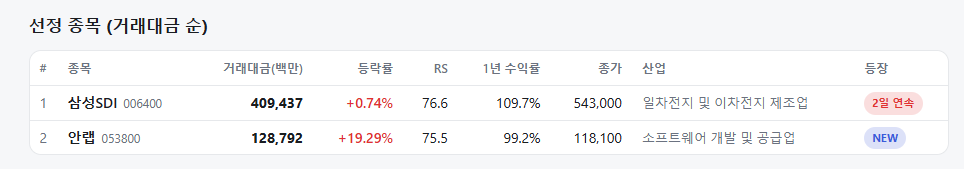
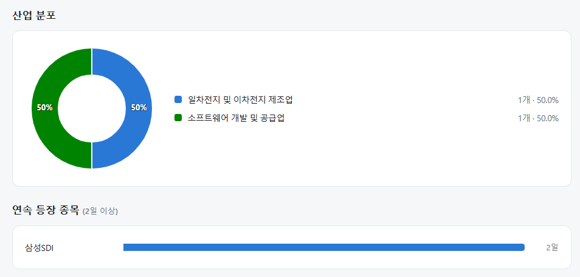
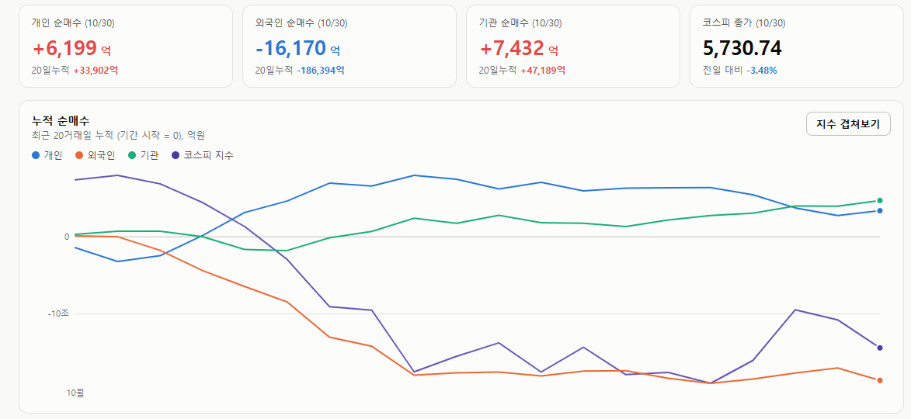
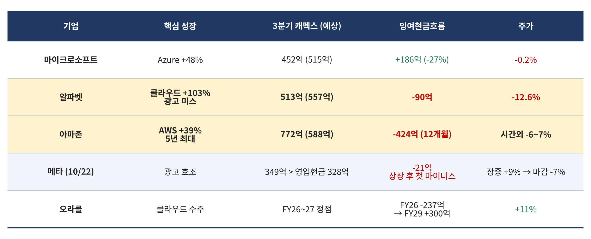

매일의 주도주 정리를 위해 기록합니다.
연속적으로 나온 종목들 또는 상승 후 조정받는 종목 위주로 리서치 해보시면 좋을 것 같습니다.


#주도섹터
상승 섹터: 소프트웨어, 제약 및 해운
주요 업종 및 종목: 소프트웨어(+7.16%), 해운사(+4.20%), 카드(+3.54%), 제약(+3.22%), 음료(+1.99%), 담배(+1.61%), 안랩(+19.29%), 삼성바이오로직스(+8.86%), 삼성SDI(+0.74%).
분석: 시장 폭락 속에서 소프트웨어 업종이 +7.16% 폭등하며 이례적인 강세를 보였습니다. 해운, 카드, 제약 등 전통적 방어 섹터로 회피성 자금이 쏠렸으며, 특히 삼성바이오로직스(+8.86%)와 삼성SDI(+0.93%)가 지수 추가 폭락을 억제하는 방어 앵커 역할을 수행했습니다.
#조정섹터
자동차, 우주항공·방산 및 반도체 밸류체인
주요 업종 및 종목: 전자장비와기기(-7.38%), 자동차(-6.90%), 우주항공과국방(-6.00%), 전기장비(-5.04%), 반도체와반도체장비(-5.01%), 기아(-11.73%), 한화에어로스페이스(-8.42%), 삼성전기(-7.50%), SK하이닉스(-7.08%), SK스퀘어(-5.88%), 삼성전자(-3.02%).
분석: 전자장비와기기(-7.38%), 자동차(-6.90%) 업종이 급락 최상단을 장악했습니다. 기아(-11.73%)가 두 자릿수 폭락을 기록했고, 한화에어로스페이스(-8.42%), SK하이닉스(-7.08%), 삼성전기(-7.50%) 등 반도체와 주도 산업재 전반에서 외국인의 묻지마 투매가 쏟아졌습니다.
#수급동향

코스피 지수는 3.48% 하락한 5,730.74로 마감하며 6,000선 돌파의 상승분을 대거 반납했습니다. 코스닥 지수 역시 -3.83% 급락한 724.38을 기록하며 투심이 다시 급격히 얼어붙었습니다.
유가증권시장에서 롱 스위칭을 기대했던 외국인 투자자가 하루 만에 무려 1조 6,170억 원을 순매도하며 대형주 전반에 패시브 투매를 재개했습니다. 기관 투자자는 7,432억 원, 개인 투자자는 6,199억 원을 순매수하며 방어에 나섰으나 지수 하락을 막지 못했습니다.
하이퍼스케일러 실적시즌 정리: 돈을 쓰는 쪽은 야위고, 돈을 받는 쪽은 살찐다
메타(22일), 마이크로소프트·알파벳·오라클(28일), 아마존(29일)까지 하이퍼스케일러 3분기 성적표가 다 나왔습니다. 그 사이에 SK하이닉스와 삼성전자도 있었습니다. 돈을 쓰는 쪽과 받는 쪽을 한 장에 놓고 보면 이번 시즌의 메시지가 분명해집니다.

① 성적표 한 장
공통점이 셋입니다. AI 매출은 전부 좋았습니다. Azure 48%, 구글 클라우드 103%, AWS 39%는 예상 이상이거나 수년 만의 최고입니다. 그런데 전체 매출과 이익은 상위 3사 모두 기대에 못 미쳤습니다. 그리고 캐펙스는 줄이지 않습니다. 알파벳의 28년 캐펙스 컨센서스는 26년의 3배인 약 3,275억 달러로 올라갔고, 아마존은 올해 2,200억 달러를 유지했습니다.
결과는 잉여현금흐름입니다. 아마존은 12개월 기준 -424억 달러로 1년 전 +148억에서 뒤집혔고, 장기부채는 12월 이후 3배인 1,730억 달러입니다. 알파벳은 역대 최대 폭으로 줄었고, 메타는 상장 후 처음 마이너스입니다. 상위 5개사의 FCF 합계는 내년에 더 줄어드는 전망이고, FCF가 줄면 주주환원이 줄어듭니다. 이것이 이번 시즌 하이퍼스케일러 약세의 구조입니다.
예외가 둘 있었습니다. 오라클은 FCF 흑자 전환 시점과 조달 상한을 숫자로 못 박아 11% 올랐고, 마이크로소프트는 캐펙스가 예상보다 63억 달러 적게 나가면서 Azure는 가속됐습니다. 시장이 벌한 것은 캐펙스가 아니라 회수 시점이 안 보이는 캐펙스입니다.
② 그 돈은 어디로 갔나
하이퍼스케일러가 쓴 돈은 사라진 것이 아니라 메모리 제조사의 이익이 됐습니다. 같은 주의 반대편 성적표입니다. SK하이닉스 영업이익 83.3조 원(영업이익률 80%), 순현금 98.7조 원, 환원 100조 원. 삼성전자 영업이익 107.4조 원, 환원 90~110조 원. 두 회사 모두 2028년까지 공급 부족과 2030년까지의 장기계약을 말했고, 발표 뒤 28년 이익 전망이 대폭 상향됐습니다.
구매자의 캐펙스 확대는 구매자의 재무를 악화시키고 공급자의 재무를 개선합니다. 구매자가 빚을 내고 증자를 하는 동안 공급자는 순현금을 쌓아 돌려줍니다. 이번 시즌은 그 이동이 숫자로 확인된 시즌입니다.
③ 그런데 시장은 같은 눈으로 본다
알파벳이 급락한 날 마이크론이 -5%, 필라델피아 반도체지수가 -1.4%였고, 삼성전자는 사상 최대 실적을 내고 장중 -6.6%까지 밀렸습니다. 시장은 하이퍼스케일러를 보는 불편한 시선 그대로 공급자를 봅니다.
이유는 셋입니다. ”FCF가 마르면 결국 캐펙스를 깎는다"는 의심, 구매자의 조달이 막히면 주문이 밀린다는 우려, 그리고 둘이 같은 바스켓에 묶여 함께 팔리는 수급입니다. 앞의 둘에는 공급자가 예치금 걸린 장기계약과 2030년까지의 물량으로 답했고 구매자의 27·28년 캐펙스 컨센서스도 오히려 올라갔습니다. 셋째는 펀더멘털이 아니라 포지셔닝이고, 그 포지셔닝은 극단에 있습니다. 시장이 구매자와 공급자를 구분하기 시작할 때 주가 차별화는 발생할 것입니다.
이번 시즌이 확인한 것은 두 가지입니다. AI 수요는 꺾이지 않았고, AI 지출의 현금 부담은 커졌습니다. 그 둘이 만나는 자리에서 수혜의 위치가 구매자에서 공급자로 이동했습니다.
구매자의 캐펙스는 구매자의 비용이고 공급자의 매출입니다. 시장이 이 당연한 문장을 인식하는데 시간이 필요해 보입니다.
이번주도 변동성이 큰 힘든 한주였습니다.
주말 푹 쉬시갈 바랍니다!